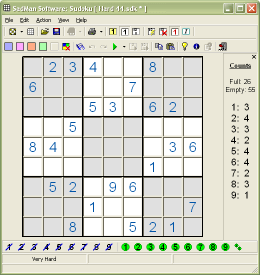

What Does It Do?

SadMan Software Sudoku will quickly and easily create and solve Sudoku puzzles. This
is a puzzle with only one rule, but it can be fiendishly difficult to
solve. The rule is simply this:
Fill in the grid so that every row, every column, and every 3 x 3 box
contains the digits 1 through 9.
If you don't want SadMan Software Sudoku to solve the puzzle for you, no problem, it
can also act as a workspace where you can manually solve it.
Features
- Can create an effectively unlimited number of puzzles with various degrees of difficulty, or requiring particular techniques to solve. Every puzzle has a unique solution.
- It solves using exactly the same techniques that a human would, so you can follow the logical steps taken to reach the solution.
- When solving automatically, it creates a log that shows the reason for entering each number in each cell, and the logic that allows for elimination of candidates. This is great for learning the advanced techniques.
- It can provide increasingly detailed hints. It first gives a fairly vague hint, then adds more detail. Great for learning!
- It can open images of sudoku puzzles, and extract the puzzle using optical character recognition (OCR.) This means you can drag'n'drop an image of a puzzle from a website, and the puzzle is automatically imported.
- If you enter a puzzle with multiple solutions, it can determine how many there are, and then show them to you. (If only Sky One had used this to avoid the fiasco of their giant prize puzzle with 1905 solutions!)
- Can show the possible candidates ("pencil-marks") for each cell and optionally keep them updated as you solve the puzzle. This removes the
tedium and lets you focus on the logic.
- Can highlight and/or prevent invalid entries.
- When pasting from the clipboard, it will accept a wide variety of text styles, and even images. This is extremely useful if you want to copy from discussion forums, websites etc.
- It can print the puzzle, optionally including pencil-marks, enabling you to solve away from your computer if you prefer.
- You can associate Sudoku puzzle files, so that a double-click will automatically open it in Sudoku,
or you can drag Sudoku puzzle files from Windows Explorer and drop them onto Sudoku.
- Small and simple to use.
- Affordable!
SadMan Software Sudoku will solve all puzzles - including those in the "fiendish" category published in The
Times, as well as those that are even harder.
Note: Sudoku uses your computer's idle time to create a library of puzzles in the
background. While this is happening, you may notice increased CPU usage, and perhaps noise from the cooling fan.
Once the library is full this will stop.